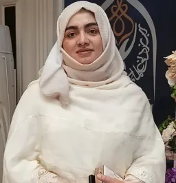
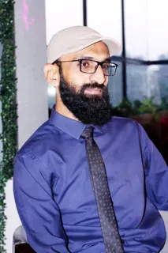
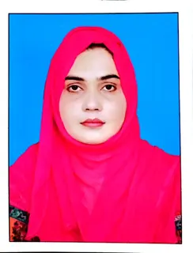
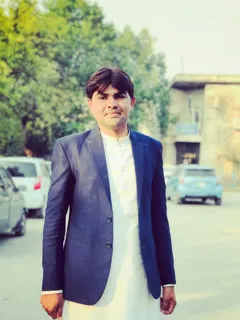

<link rel="stylesheet" href="lab-grid.css">
<article class="research-notes">
  <h1>Collaborations</h1>
  <p>Our faculty bring mathematical and computational perspectives to questions in AI, education, and applied research.</p>
  <section aria-labelledby="faculty-title">
    <h2 id="faculty-title">Faculty collaborators</h2>
    <div class="faculty-directory">
      <article class="faculty-card">
        
        <h3>Dr. Hira Benish</h3>
        <p class="faculty-role">Associate Professor of Mathematics · Founder &amp; Research Director<br><span style="font-weight:400">Riphah International University, Sahiwal</span></p>
        <p>Graph theory and the mathematical foundations of AI.</p>
      </article>
      <article class="faculty-card">
        
        <h3>Dr. Muhammad Asad Iqbal</h3>
        <p class="faculty-role">Assistant Professor<br><span style="font-weight:400">Riphah International University, Sahiwal</span></p>
        <p>Topological algebra, vector spaces, selection principles, and game theory.</p>
      </article>
      <article class="faculty-card">
        
        <h3>Abdul Salam</h3>
        <p class="faculty-role">Lecturer in Mathematics<br><span style="font-weight:400">Riphah International University, Sahiwal</span></p>
        <p>Applied and computational mathematics, numerical methods, and Python.</p>
      </article>
      <article class="faculty-card">
        
        <h3>Samer Parveen</h3>
        <p class="faculty-role">Lecturer in Mathematics<br><span style="font-weight:400">Riphah International University, Sahiwal</span></p>
        <p>Fluid mechanics and computational models of blood flow.</p>
      </article>
      <article class="faculty-card">
        
        <h3>Ghulam Murtaza</h3>
        <p class="faculty-role">Lecturer<br><span style="font-weight:400">Riphah International University, Sahiwal</span></p>
        <p>Computational biology, dynamical systems, and predictive modeling with machine learning.</p>
      </article>
      <article class="faculty-card">
        
        <h3>Shumaila Asghar</h3>
        <p class="faculty-role">Lecturer<br><span style="font-weight:400">Riphah International University, Sahiwal</span></p>
        <p>Programming and artificial intelligence.</p>
      </article>
    </div>
  </section>
  <section id="details">
    <h2>Propose a contribution</h2>
    <p>Mathematicians, developers, educators, and students can propose a project. Tell us the question you want to investigate, what you hope to build, and how you would like to contribute.</p>
    <a href="contact.html">Discuss a project →</a>
  </section>
</article>